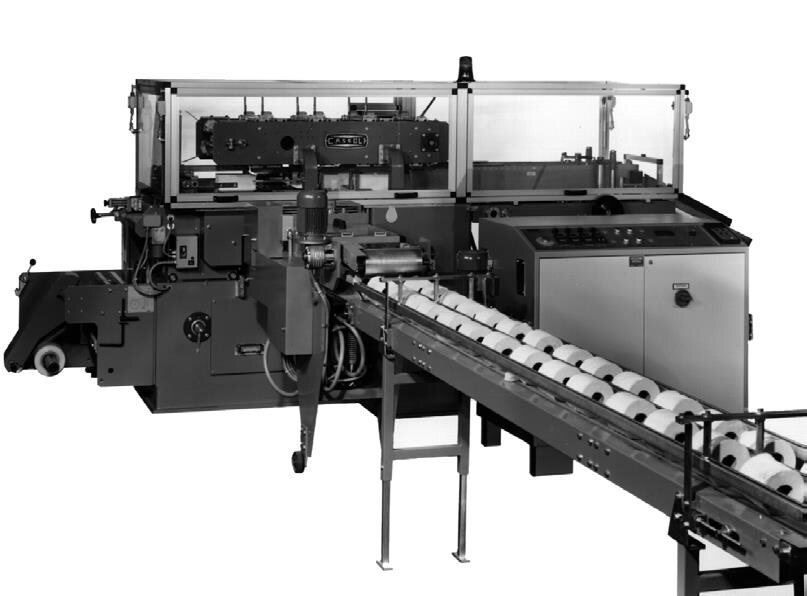
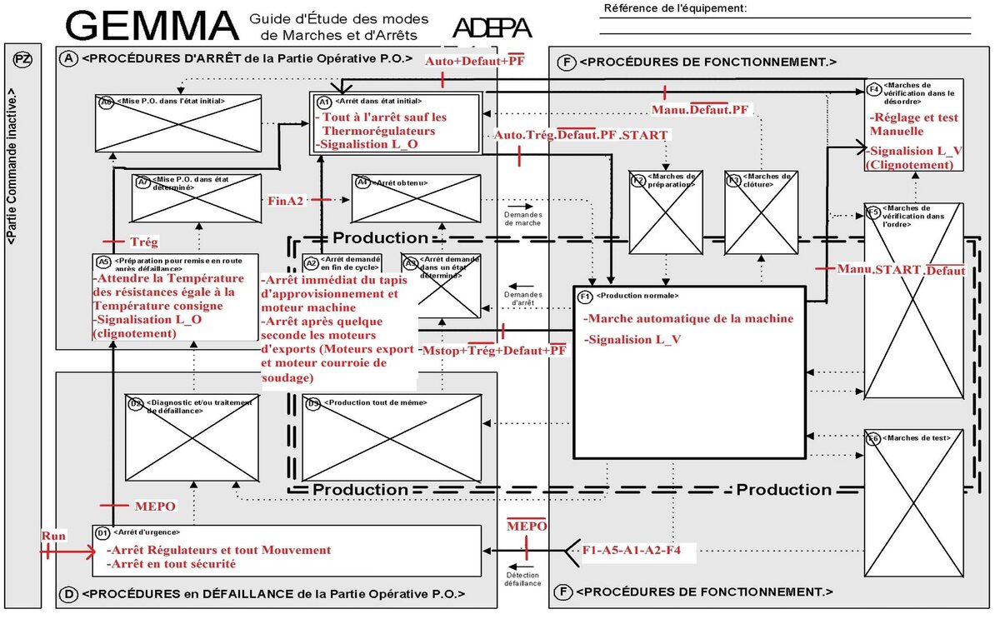
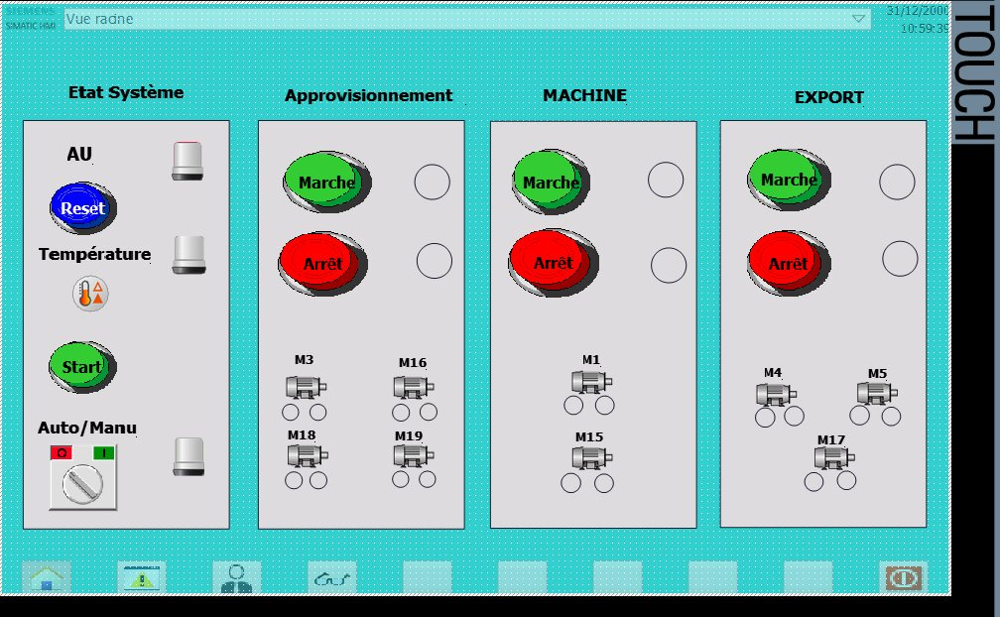
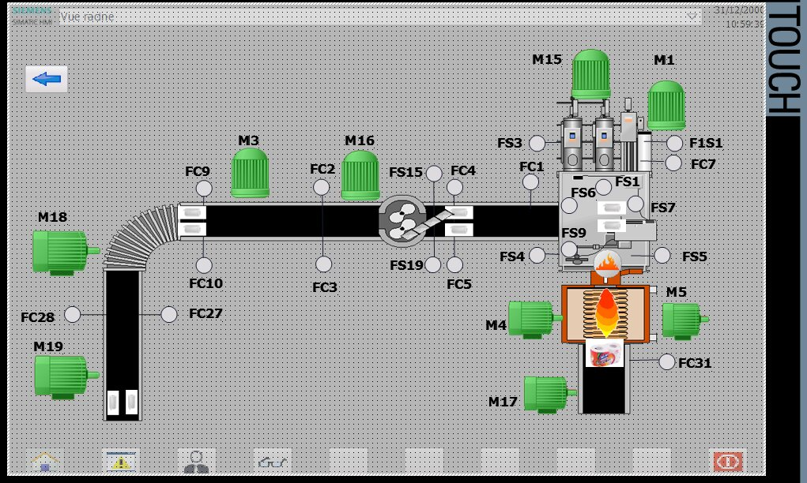

Projects / PAC110 Packaging Machine
Renewal of the PAC110 Packaging Machine
- Siemens S7-1200
- TIA Portal
- GRAFCET
- GEMMA
- EPLAN
- HMI TP1200 Comfort
- PLCSIM
Context
The PAC110 machine wraps toilet paper rolls into packs on a production line at Sancella. It was controlled by an old Siemens S5 PLC whose spare parts are no longer sold, and the machine could not be extended to follow product changes. The goal was to migrate its control to a Siemens S7-1200.
What we did
We studied the operative part of the machine and its five subsystems (supply, separator, wrapping group, welding belts and export), then drew new electrical schematics for the control cabinet in EPLAN. The behavior was specified with GEMMA and GRAFCET, with a safety GRAFCET, a conduct GRAFCET for the run and stop modes, and GRAFCETs for normal production and manual operation. We then derived the equations, programmed the solution in ladder logic in TIA Portal, tested it in PLCSIM, and built a supervision application on a TP1200 Comfort panel with three views: root, control and synoptic.
The machine and the design




Supervision


